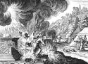

|
|
|
Numbers 3
|
|
| 3:1
These also are the generations of Aaron and Moses in the day that the LORD
spake with Moses in mount Sinai. |
|
| 3:2
And these are the names of the sons of Aaron; Nadab the firstborn, and
Abihu, Eleazar, and Ithamar. |
|
| 3:3
These are the names of the sons of Aaron, the priests which were anointed,
whom he consecrated to minister in the priest's office. |
|
| 3:4
And Nadab and Abihu died before the LORD, when they offered strange fire before the LORD, in
the wilderness of Sinai, and they had no children: and Eleazar and Ithamar
ministered in the priest's office in the sight of Aaron their father.
|


 (3:4) (3:4)
"Nadab and Abihu died before the LORD, when they offered strange fire before the
LORD."
Two of Aaron's sons are killed by God for "offering strange fire before the Lord."
God's 13th Killing
Aaron's Sons, Nadab and Abihu, Destroyed by Fire
Merian (1625-30)
|
| 3:5
And the LORD spake unto Moses, saying,
|
| 3:6
Bring the tribe of Levi near, and present them before Aaron the priest,
that they may minister unto him.
|
| 3:7
And they shall keep his charge, and the charge of the whole congregation
before the tabernacle of the congregation, to do the service of the
tabernacle.
|
| 3:8
And they shall keep all the instruments of the tabernacle of the
congregation, and the charge of the children of Israel, to do the service of
the tabernacle.
|
| 3:9
And thou shalt give the Levites unto Aaron and to his sons: they are
wholly given unto him out of the children of Israel. |
|
| 3:10
And thou shalt appoint Aaron and his sons, and they shall wait on their
priest's office: and the
stranger that cometh nigh shall be put to death. |
 (3:10) (3:10)
"The stranger that cometh nigh shall be put to death."
How should strangers be treated?
|
| 3:11
And the LORD spake unto Moses, saying,
|
| 3:12
And I, behold, I have taken the Levites from among the children of Israel
instead of all the firstborn that openeth the matrix among the children of
Israel: therefore the Levites shall be mine; |
|
| 3:13
Because all the firstborn are mine; for on the day that I smote all the
firstborn in the land of Egypt I hallowed unto me all the firstborn in
Israel, both man and beast: mine shall they be: I am the LORD. |

 (3:15-16)
(3:15-16)
When "Moses numbered them according to the word of the Lord" he was told to count "every
male from a month old and upward." Women and girls didn't count as persons. Neither did babies
(or fetuses) under 1 month old.
What the Bible says about abortion
(3:15) "Every male from a month old and upward shalt thou number."
(3:16) "And Moses numbered them according to the word of the LORD."
 (3:17-37) "And these were the sons of Levi by their names...." (3:17-37) "And these were the sons of Levi by their names...."
More exciting names and numbers brought to you by the biblical God.
|
| 3:14
And the LORD spake unto Moses in the wilderness of Sinai, saying,
|
| 3:15
Number the children of Levi after the house of their fathers, by their
families: every male from a month old and upward shalt thou number them.
|
| 3:16
And Moses numbered them according to the word of the LORD, as he was
commanded.
|
| 3:17
And these were the sons of Levi by their names; Gershon, and Kohath, and
Merari.
|
| 3:18
And these are the names of the sons of Gershon by their families; Libni,
and Shimei.
|
| 3:19
And the sons of Kohath by their families; Amram, and Izehar, Hebron, and
Uzziel. |
|
| 3:20
And the sons of Merari by their families; Mahli, and Mushi. These are the
families of the Levites according to the house of their fathers. |
|
| 3:21
Of Gershon was the family of the Libnites, and the family of the Shimites:
these are the families of the Gershonites. |
|
| 3:22
Those that were numbered of them, according to the number of all the
males, from a month old and upward, even those that were numbered of them
were seven thousand and five hundred. |
|
| 3:23
The families of the Gershonites shall pitch behind the tabernacle
westward. |
|
| 3:24
And the chief of the house of the father of the Gershonites shall be
Eliasaph the son of Lael. |
|
| 3:25
And the charge of the sons of Gershon in the tabernacle of the
congregation shall be the tabernacle, and the tent, the covering thereof,
and the hanging for the door of the tabernacle of the congregation, |
|
| 3:26
And the hangings of the court, and the curtain for the door of the court,
which is by the tabernacle, and by the altar round about, and the cords of
it for all the service thereof. |
|
| 3:27
And of Kohath was the family of the Amramites, and the family of the
Izeharites, and the family of the Hebronites, and the family of the
Uzzielites: these are the families of the Kohathites. |
|
| 3:28
In the number of all the males, from a month old and upward, were eight
thousand and six hundred, keeping the charge of the sanctuary. |
|
| 3:29
The families of the sons of Kohath shall pitch on the side of the
tabernacle southward. |
|
| 3:30
And the chief of the house of the father of the families of the Kohathites
shall be Elizaphan the son of Uzziel. |
|
| 3:31
And their charge shall be the ark, and the table, and the candlestick, and
the altars, and the vessels of the sanctuary wherewith they minister, and
the hanging, and all the service thereof. |
|
| 3:32
And Eleazar the son of Aaron the priest shall be chief over the chief of
the Levites, and have the oversight of them that keep the charge of the
sanctuary. |
|
| 3:33
Of Merari was the family of the Mahlites, and the family of the Mushites:
these are the families of Merari. |
|
| 3:34
And those that were numbered of them, according to the number of all the
males, from a month old and upward, were six thousand and two hundred. |
|
| 3:35
And the chief of the house of the father of the families of Merari was
Zuriel the son of Abihail: these shall pitch on the side of the tabernacle
northward. |
|
| 3:36
And under the custody and charge of the sons of Merari shall be the boards
of the tabernacle, and the bars thereof, and the pillars thereof, and the
sockets thereof, and all the vessels thereof, and all that serveth thereto, |
|
| 3:37
And the pillars of the court round about, and their sockets, and their
pins, and their cords. |
|
| 3:38
But those that encamp before the tabernacle toward the east, even before
the tabernacle of the congregation eastward, shall be Moses, and Aaron and
his sons, keeping the charge of the sanctuary for the charge of the children
of Israel; and the
stranger that cometh nigh shall be put to death. |
(3:38)
"The stranger that cometh nigh shall be put to death."
How should strangers be treated?
|
| 3:39
All that were numbered of the Levites, which Moses and Aaron numbered at
the commandment of the LORD, throughout their families, all the males from a
month old and upward, were twenty and two thousand. |
(3:39-51) "All that were numbered of the Levites, which Moses and Aaron numbered
at the commandment of the LORD...."
Important stuff that you need to know about.
|
| 3:40
And the LORD said unto Moses, Number all the firstborn of the males of the
children of Israel from a month old and upward, and take the number of their
names. |
|
| 3:41
And thou shalt take the Levites for me (I am the LORD) instead of all the
firstborn among the children of Israel; and the cattle of the Levites
instead of all the firstlings among the cattle of the children of Israel. |
|
| 3:42
And Moses numbered, as the LORD commanded him, all the firstborn among the
children of Israel. |
|
| 3:43
And all the firstborn males by the number of names, from a month old and
upward, of those that were numbered of them, were twenty and two thousand
two hundred and threescore and thirteen. |
|
| 3:44
And the LORD spake unto Moses, saying, |
|
| 3:45
Take the Levites instead of all the firstborn among the children of
Israel, and the cattle of the Levites instead of their cattle; and the
Levites shall be mine: I am the LORD. |
|
| 3:46
And for those that are to be redeemed of the two hundred and threescore
and thirteen of the firstborn of the children of Israel, which are more than
the Levites; |
|
| 3:47
Thou shalt even take five shekels apiece by the poll, after the shekel of
the sanctuary shalt thou take them: (the shekel is twenty gerahs:) |
|
| 3:48
And thou shalt give the money, wherewith the odd number of them is to be
redeemed, unto Aaron and to his sons. |
|
| 3:49
And Moses took the redemption money of them that were over and above them
that were redeemed by the Levites: |
|
| 3:50
Of the firstborn of the children of Israel took he the money; a thousand
three hundred and threescore and five shekels, after the shekel of the
sanctuary: |
|
| 3:51
And Moses gave the money of them that were redeemed unto Aaron and to his
sons, according to the word of the LORD, as the LORD commanded Moses. |
|
|


{kind=link}